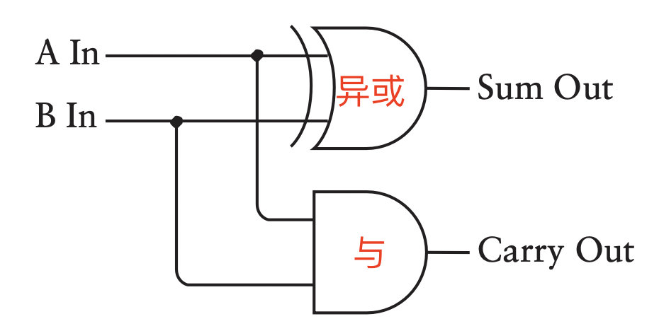
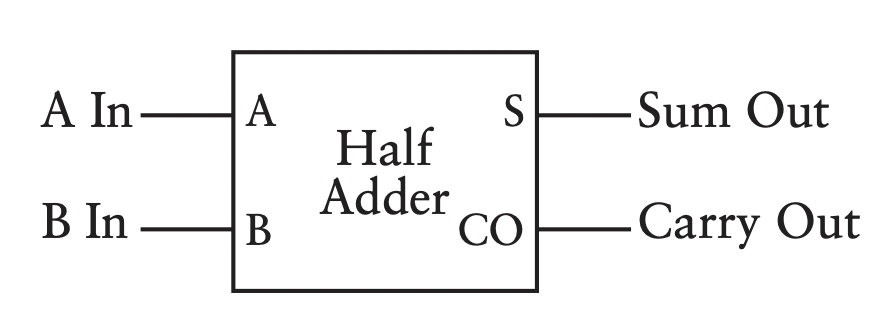

补码加法
若用长度为 n+1 的补码来表示定点整数（小数也同理），当 ∣x∣<2n−1，∣y∣<2n−1，∣x+y∣<2n−1，
[x]补+[y]补=[x+y]补
证明：
-
x≥0, y≥0 时，则 x+y 非负，补码与原码相同。
[x]补+[y]补=x+y=[x+y]补
-
x≥0, y<0 （或x<0, y≥0）时，则 x+y 可能为正，也可能为负。
由 [x]补=x，[y]补=2n+1+y，有：
[x]补+[y]补=x+2n+1+y=(x+y)+2n+1=[x+y]补
-
x<0, y<0 时，则 x+y 为负数。
由 [x]补=2n+1+x，[y]补=2n+1+y，有：
[x]补+[y]补=2n+1+x+2n+1+y=[x+y]补
补码加法的特点：①符号位作为数的一部分参与运算；②进位要舍弃。
注意：最高位的进位被舍弃不一定代表计算结果的溢出，例如(-1)+(-2)也会产生最高位的进位，但并没有溢出，计算结果仍是正确的。后文会介绍如何正确检测溢出。
补码减法
首先证明：
[y]补+[−y]补=0
证明：
(1)+(2)∵[x+y]补=[x]补+[y]补∴[y]补=[x+y]补−[x]补∵[x−y]补=[x+(−y)]补=[x]补+[−y]补∴[−y]补=[x−y]补−[x]补⇒[y]补+[−y]补=[x+y]补−[x]补+[x−y]补−[x]补 =[x+x]补−[x]补−[x]补 =0(1)(2)
因此可得：
[x]补−[y]补=[x]补+[−y]补=[x−y]补
如何由 [y]补 求出 [−y]补 ？求补运算
可见，补码的减法运算可以转化为加法运算，这样就可以只用加法器电路，简化计算机的设计。
溢出检测
两个正数相加，结果大于机器字长所能表示的最大正数，称为正溢。而两个负数相加，结果小于机器所能表示的最小负数，称为负溢。当运算过程中出现溢出时，其结果是不正确的，故运算器必须能检测出溢出。
双符号位法（变形补码）
一个数的变形补码即：将该数的最高位（符号位）再复制一次。可见：正数的变形补码的符号位为00，负数的变形补码的符号位为11。
结论：如果两个数相加后，其结果的符号位为 01 或 10，说明发生溢出，并且最高符号位反映了正确结果应该是什么符号。即：
- 若符号位为01，表示发生了正溢
- 若符号位为10，表示发生了负溢
逻辑实现上，记最高符号位为Sf1，次高符号位为Sf2，则可根据Sf1⨁Sf2判断是否发生溢出。
单符号位法
- 当最高有效位产生进位而符号位无进位时，发生正溢
- 当最高有效位无进位而符号位有进位时，发生负溢
逻辑实现上，记符号位产生的进位为Cf，最高有效位产生的进位为C0，则可根据 Cf⨁C0 来判断是否溢出。
加法器
半加器（Half Adder）：
SCO==A⨁BAB


如果要实现3个bit相加，则需要3个半加器：

注意到3个bit相加的结果最多为2位，第3个半加器的进位结果一定为0，因此可将第3个半加器替换为一个‘或’门：
- 若CO1=1，则S1=0，从而CO2=0，最终CO3=0
- 若CO1=0，则CO3=0

上图其实也就是全加器（Full Adder）：
\begin{eqnarray} S&= &A\oplus B\oplus C \\ CO&=&AB+AC+BC=AB+(A\oplus B)C \end{eqnarray}

考虑到逻辑门的延迟时间：

可见，与非门的延迟时间较低，因此根据：
CO=AB+(A⊕B)C=AB+(A⊕B)C=AB⋅(A⊕B)C
将电路尽可能多采用与非门：

此时整体上的延迟时间为：
| 路径 |
延迟时间 |
| A(B)→S |
6T |
| A(B)→CO |
5T |
| C→S |
3T |
| C→CO |
2T |

有了多个全加器之后，容易构造出一个串行进位加法器（Serial Carry Adder）：

特点为：
- 从最低位开始逐位相加，产生的进位逐次向高位传递（低位全加器的进位输出 → 高位全加器的进位输入）。
- 每一位的结果必须等到低位运算完成后才能建立起来，运算速度慢。位数越多，速度越慢。
对于一个由 n 个全加器构成的串行进位加法器，记录每个全加器算出结果的时间：
|
FA1 |
FA2 |
FA3 |
⋯ |
FAn−1 |
FAn |
| S |
6T |
5T+3T |
(5T+2T)+3T |
⋯ |
|
$\textcolor |